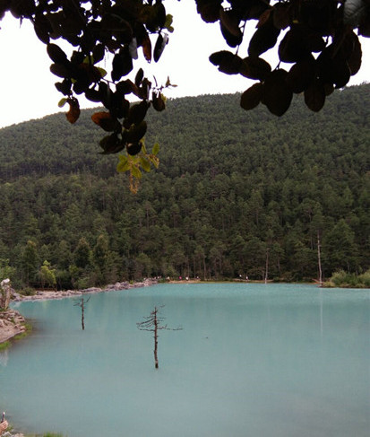
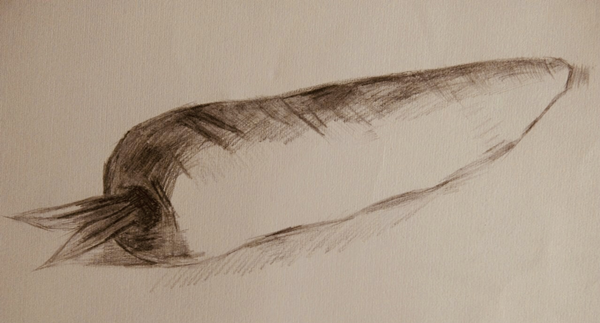

我的家乡商南县坐落在陕西的东南门，这里风景如画、生态优美。
无论是在傍晚穿行于车水马龙的城市中心道，还是在清晨漫步于林荫小路，都令人心旷神怡、悠然自得。
盛夏的太阳炙烤着大地，火热热没有一丝阴凉地。鱼儿们却有一方小池，可以在其间嬉戏玩耍，自由自在，惬意极了！
第一次到云南，第一次见到这样的湖，碧波浩渺，像一块玉石静静卧于山间，自带一股清凉。
周末和舍友们去学校附近的紫阳公园，一路欢笑，不知不觉太阳竟已悄悄西落。抬头只见老树的枝丫肆意铺展开来，罩住了天空。
喜欢画画带给我的平静和快乐，一开始比较困难，但在努力学习和逐渐进步的过程中，收获的快乐感和充实感是无尽的！
